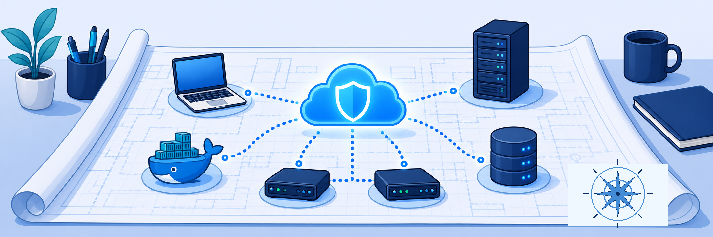
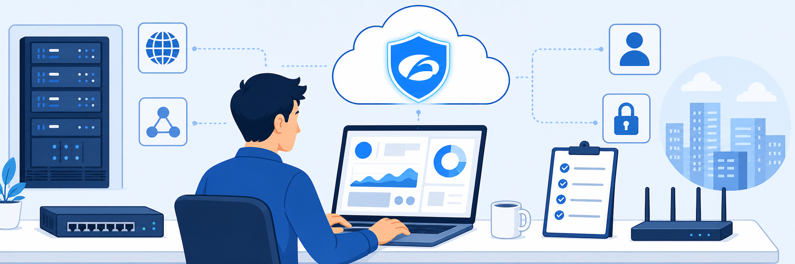
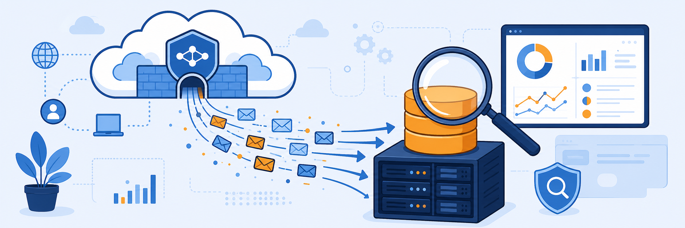
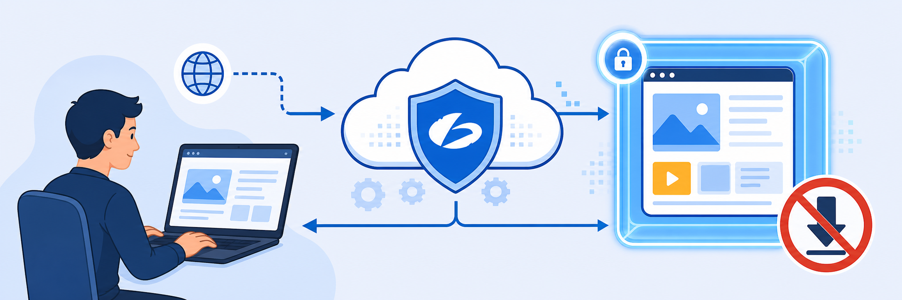
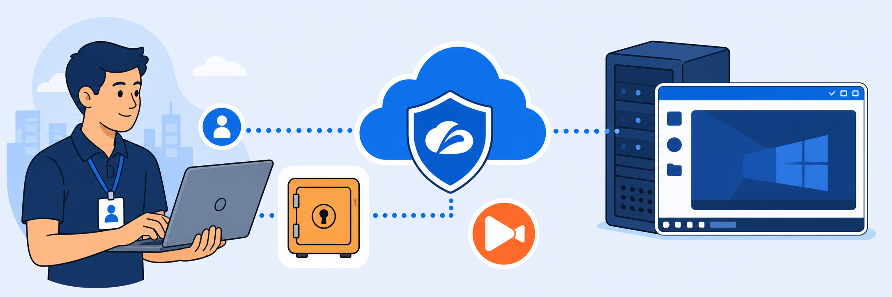
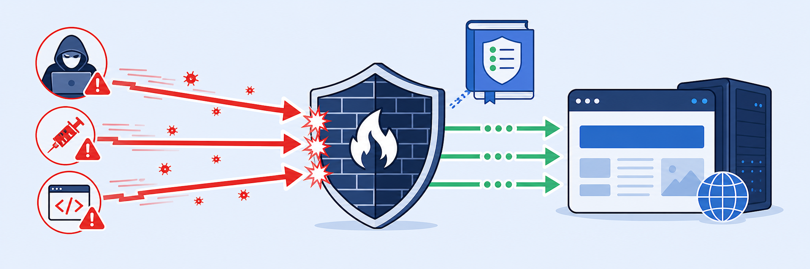
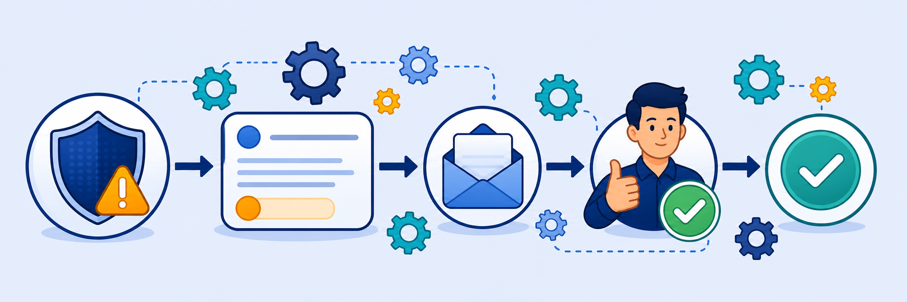

ⓘ Zscaler in one minute — key terms
ZIAZscaler Internet Access — cloud-based secure web gateway. Inspects and enforces policy on all internet traffic from users and devices.
ZPAZscaler Private Access — zero-trust network access for internal apps. Users connect to apps, never to the network.
ZDXZscaler Digital Experience — end-to-end performance monitoring for users, devices, and SaaS applications.
App ConnectorLightweight VM deployed inside your data center or cloud that creates outbound connections to ZPA, enabling zero-trust access without opening inbound firewall ports.
Browser AccessClientless ZPA access for web applications — users reach internal apps through a browser without the ZCC agent or a VPN.
PRAPrivileged Remote Access — browser-based RDP/SSH for contractors and third parties, with credential vaulting and session recording. No VPN required.
AppProtectionInline WAF capability inside ZPA that applies OWASP CRS rules and ThreatLabZ intelligence to private application traffic.
ZTBZero Trust Browser — remote browser isolation for ZPA-published apps, rendering content in the cloud so no active content reaches the endpoint.
SETUP
Environment Orientation
Labs 0–1 · Review the topology, record your credentials, then get your Skytap pod running
LAB 0~5 min
Lab Orientation & Environment Overview
Study the lab scenario, learn the 7 virtual machines in your Skytap pod, record every credential you'll use across all 12 labs, and understand how to access both the dedicated tenant and the Solutions Demo Center.

Start Lab →
LAB 1~15 min
Environment Setup
Start the Skytap lab pod, connect to the Corp: Client PC, and log into the Zscaler Experience Center — the launchpad for every lab that follows.

Start Lab →
ZPA CONNECTIVITY
App Connector, Browser Access & Log Streaming
Labs 2–3 · Deploy ZPA infrastructure and route telemetry to your SIEM
LAB 2~35 min
ZPA App Connector & Browser Access
Deploy an App Connector to bridge internal apps to the Zscaler cloud, then extend zero-trust access to clientless web users via Browser Access — no VPN, no ZCC required.

Start Lab →
LAB 3~30 min
ZPA Log Streaming
Deploy a dedicated Log Streaming Connector, configure a Log Receiver pointing at your SIEM VM, and verify that ZPA user activity logs arrive in real time over TCP/TLS.

Start Lab →
SECURITY CONTROLS
Isolation, Privileged Access & Application Protection
Labs 4–7 · Browser Isolation, Privileged Remote Access, AppProtection WAF, and Zero Trust Browser
LAB 4~25 min
ZIA Browser Isolation
Build an Isolation Profile and enforce it via URL Filtering so risky social networking and uncategorised sites render inside a remote Zscaler container — no active content reaches the endpoint.

Start Lab →
LAB 5~40 min
ZPA Privileged Remote Access
Build the full PRA stack — App Segments, Privileged Portal, Consoles, Credentials, and two access policies — giving contractors browser-based RDP/SSH to internal servers with no VPN and no exposed credentials.

Start Lab →
LAB 6~30 min
ZPA AppProtection
Apply an inline WAF to the Damn Vulnerable Web App (DVWA) using OWASP CRS rules and ThreatLabZ intelligence. Watch SQL injection and XSS attacks flow in Report mode, then switch to Block.

Start Lab →
LAB 7~25 min
ZPA Zero Trust Browser
Create a render-only isolation profile and isolate the DVWA app for clientless users — copy, paste, upload, and download are all controlled by the profile, and no files reach the endpoint.

Start Lab →
MONITORING
ZDX Cloud App Monitoring & Diagnostics
Labs 8–9 · Synthetic probes, performance alerting, and deep device diagnostics
LAB 8~30 min
ZDX Cloud App Monitoring
Build a ZDX monitoring collection for a custom mail server application using both Web and Cloud Path probes to continuously measure availability and network performance from user endpoints.

Start Lab →
LAB 9~25 min
ZDX Alerts & Diagnostics
Configure a ZDX alert rule that fires when application performance degrades, then launch a Diagnostic Session to capture real-time Wi-Fi, DNS, cloud path, and application metrics for a specific user.

Start Lab →
AUTOMATION
Zscaler OneAPI & Infrastructure Automation
Lab 10 · OAuth 2.0 authentication, live API queries, and programmatic resource creation
SDC ADVANCED LABS
Reporting, Analytics & Incident Automation
Labs 11–12 · Solutions Demo Center — ZDX data analysis and ZWA incident management workflows
LAB 11~15 min
Analyze Data and View Integrated Reports
Use ZDX Data Explorer to build custom queries, download a QBR PowerPoint report, interact with system-generated Cloud Path reports, and create a shareable ZDX Snapshot for view-only stakeholder access.

Start Lab →
LAB 12~20 min
Manage Incidents with Zscaler Workflow Automation
Triage a DLP incident end-to-end — examine trigger data, update status and priority, notify the originator, escalate to an approver, and explore automated workflow templates and mappings that replace manual triage steps.

Start Lab →